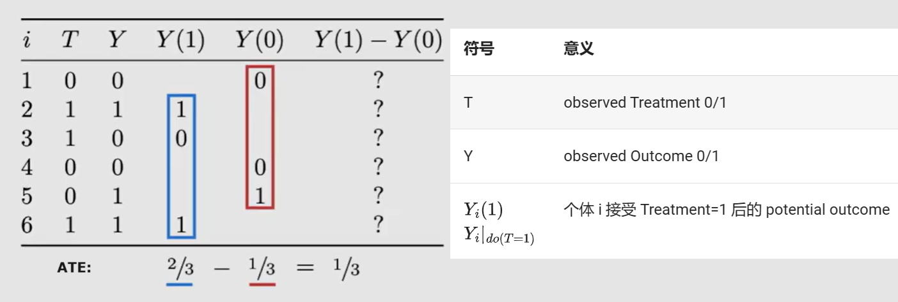
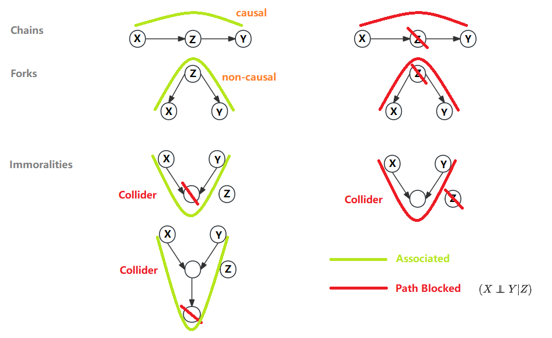
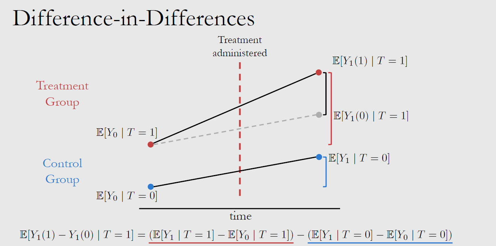
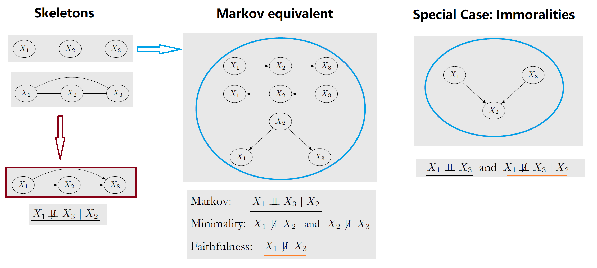
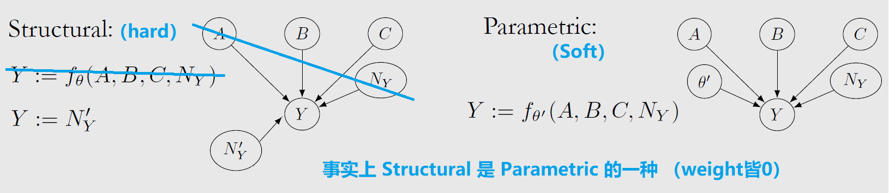
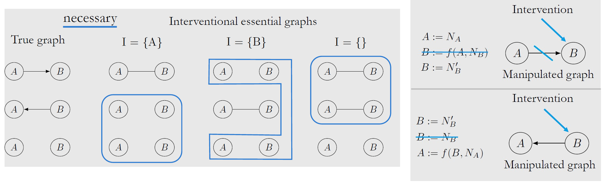

Causal Inference I
此处笔记为 《因果推理导论》课程(2020) by Brady Neal 的简短摘要，SLides
T=Treatment Y=Outcome Y(1) = Y(T=1)
E[...|T=1] 只是指代样本分组 即 E[...|T=G] 故而可以有 E[Y(0)|T=1] 这样的Counterfactual
ITE: Individual treatment effect
ATE: Average treatment effect* |
ATT: ATE over T=1 samples
L1-Intro
-
为什么要进行 Randomized control trials（RCT）？为了防止有 Confounders C 同时对自变量T与因变量Y施加影响，导致T与Y的相关性不置信，此时 Association $\neq$ Causation
-
但只有观测数据时，如果可以找到合适的要素集 W 阻断 Confounding Path，也可以达成 $do(T=t)$ 的效果: $E[Y|do(T=t)] = E_w[E[Y|t,w]] = \sum\limits_w E[Y|t,w]P(w) $
{kind=link}
L2-Causal to Statistical
假设有如下图所示的观测数据。

| -- | Estimand |
|---|---|
| ITE (Causal Effect) |
$Y_i(1)-Y_i(0)$ |
| ATE (Statistical) |
$E[Y_i(1)-Y_i(0)]=E[Y(1)]-E[Y(0)]$ |
| Associational Difference (Conditional Expectations) |
$E[Y|T=1]-E[Y|T=0]$ |
{kind=link}
由于一个样本只能进行一种 Treatment，所以 Causal Effect 无法直接求得，只能近似其期望值 ATE。由于 Causal Association与 Confounding Association 同时存在，所以所以需要一些假设才能用 Associational Difference 近似 ATE
{kind=link}
Hints：也可以通过训练模型（e.g.regression）的方式计算 Estimand，只要训练数据按需拆分了即可
| -- | 假设 | （以1为例，0同理） | Hint |
|---|---|---|---|
| -- | -- | -- | potential outcomes $Y(1)$意味着$Y(T=1)$ |
| Ignorability | $Y(1) \perp\!\!\!\!\perp T$ Treatment assignment T is independent to the potential outcomes Y（T/Y之间无Confounders） |
$E[Y(1)]$=$E[Y(1)|T=1]$ | Y(T=1)在T=1组中的期望等同于在全体样本中的期望（统计时可忽略T=1不包含的数据） |
| (Exchangeability) | Y(T=1)在T=1组中的期望与在T=2组中的一致，交换样本不会对结果造成影响 | $E[Y(1)]$=$E[Y(1)|T=1]$=$E[Y(1)|T=0]$ | 同Ignorability一样，为了应对“Confounders 可能会影响T的分组，造成T=0/1中样本分配不均，统计时condition on T会造成bias”的担忧 |
| Unconfoundedness (Conditional Exchangeability) |
寻找一组 $X$ 令 $(Y(1) \perp\!\!\!\!\perp T | X)$ | $E[Y(1)|X]$=$E[Y(1)|T=1,X]$ | 于是可以 conditioning on X 计算边缘概率 $E[Y(1)]$=$E_X[E[Y(1)|T=1,X]]$ --- 注意，Unconfoundedness 不可测试，因为 Confounders 未知 |
| Identifiability | 因果问题可转变为统计问题: Causal $\Rightarrow$ Statistical | $E[Y(1)|T=1]$=$E[Y|T=1]$ | 如果 causal quantity $E[Y(t)]$ 可以被 statistical quantity $E[Y|t]$ 表达，则称其 identifiable |
| Positivity | $0 \lt P(T=1|x) \lt 1$ | -- | 关于任何 Covariates x 进行拆分/分层后，每部分都需要同时包含T=1和T=0的结果，避免因只有T=1数据而导致T=0的结果无法预测；如果违反了 Positivity，各部分样本T的分布显著不同，则只能进行 Extrapolation |
| No interference | $Y_i(t_1,...,t_n)$=$Y_i(t_i)$ | -- | 实验个体间互不干扰 |
| Consistency | $(T=t) \Rightarrow (Y=Y(t))$ | -- | 干预效果对所有的个体而言都是相同的 示例：$Y_i(1)=1$，$Y_j(1)=1$ 反例：$Y_i(1)=1$，$Y_j(1)=0$；表明T=1的效果不恒定 |
{kind=link}
{kind=link}
L3-Graph Models
如果尝试使用有向无环图（DAG）$X_1 \rightarrow X_2 \rightarrow X_3$ 对分布 $P(x_1,x_2,x_3)=P(x_1)P(x_2|x_1)P(x_3|x_2,x_1)$ 进行化简，则需要遵从如下假设：
- (Define Statistical independencies) Local Markov assumption: Given its parents in the DAG, a node X is independent of all of its non-descendants；注意，X 与 parents 间也可以是独立的，所以需要补丁:
- (Define Statistical dependencies) Minimality assumption: Adjacent nodes in the DAG are dependent
于是可以化简统计式：$P(x_3|x_2,x_1)=P(x_3|x_2)$
如果希望进一步将统计式转换为因果概念，则需要遵从如下假设：
- (Define Causal dependencies) Causal Edges Assumption: In a directed graph, every parent is a direct cause of all its children
常见有 Chain/Fork/Immoralities 三种结构，图示绿色线条表示 XY 间有 association Path，红色则表示 Path 被阻断。对于 Chain/Fork 可以通过 Condition on Z 阻断通路，即 $P(X,Y|Z)$；但对于 Immoralities 则正相反，Condition on Z 反而会使原本阻塞的 Path 联通
{kind=link}
{kind=link}

-
d-separation: Two (sets of) nodes X and Y are d-separated by a set of nodes Z if all of the paths between (any node in) X and (any node in) Y are blocked by Z，即 $(Y \perp\!\!\!\!\perp X | Z)_G$
-
图中G的 independence $(Y \perp\!\!\!\!\perp X | Z)_G$，也意味着分布P中的 independence $(Y \perp\!\!\!\!\perp X | Z)_P$
-
不建议 condition on post-treatment nodes (G中T的后代)，且pre-treatment也并不完全保险
{kind=link}
L4-do() Backdoor
| v.s. | Interventional | Observational |
|---|---|---|
| -- | 设计实验时按某一条件分配样本 | 将已有数据按某一条件 Conditioning |
| -- | Causal Estimand | Statistical Estimand |
| Notation | $P(Y(t)=y)$ $P(Y=y|do(T=t))$ $P(y|do(t))$ |
$P(Y=y|T=t)$ $P(y|t)$ |
| ATE | $E[Y|do(T=1)]-E[Y|do(T=0)]$ | 见 L2 |
{kind=link}
-
Modularity: If intervene on a set of nodes S, setting them to constant values,
- If $i \notin S$, then $P(x_i | pa_i)$ remains unchanged
- If $i \in S$, then $P(x_i | pa_i) = 1$ if $x_i$ equals to the settled value; otherwise $P(x_i | pa_i) = 0$
- 因此化简: $P(x_1,...,x_i|do(S=s))=\prod\limits_{i \notin S}P(x_i|pa_i)$ or 0
-
Backdoor Adjustment: A set of nodes W satisfies the backdoor criterion relative to T and Y if
- W blocks all backdoor paths from T to Y
- W does not contain any descendants of T
-
满足 backdoor criterion 后，remove all outgoing edges from T，则可以达成 d-separation: $Y\perp\!\!\!\!\perp_{G_{\underline{T}}} T | W$
{kind=link}
{kind=link}
{kind=link}
{kind=link}
L5-do() Frontdoor
-
Randomized control trial (RCT) 随机分配样本，令 covariates $X$ 在每一组 $T$ 中的分布都相同，即 $P(X|T=t)\stackrel{\text{d}}{=}P(X)$，即 $T \perp\!\!\!\!\perp X$，相当于达成了 Exchangeability 假设，也相当于消除了 confounding association (backdoor paths)；于是 $P(y|do(t))=P(y|t)$
-
当 Backdoor Adjustment 无法达成时，可使用 Frontdoor Adjustment 对 Path 进行分步计算
-
Unconfounded children criterion 是 Identifiability 的充分条件，Pearl's rules of do-calculus是 Identifiability 的充分必要条件
{kind=link}
{kind=link}
{kind=link}
L6-Estimation
| -- | Causal Estimand | Statistical Estimand |
|---|---|---|
| ATE | $E[Y(1)-Y(0)]$ | $$E_W[E[Y|T=1,W]-E[Y|T=0,W]]$$ Given W is a sufficient adjustment set |
| CATE (Conditional ATE) |
$E[Y(1)-Y(0)|X=x]$ | $$E_W[E[Y|T=1,X=x,W]-E[Y|T=0,X=x,W]]$$ Given W+X is a sufficient adjustment set |
训练模型以预测CATE Estimands (模型可以是回归/深度学习/...)
-
Conditional outcome modeling (COM)/ G-formula/ S-learner/ ...
- 训练一个模型 $\mu(t,w,x)$ for $E[Y|T,X,W]$
- 不足：模型中 T 参数的权重可能会趋于0，导致T不影响模型结果
-
Grouped COM (GCOM)
- 为每个T训练一个模型 $\mu_t(w,x)$ for $E[Y|T=t,X,W]$
- 不足：数据利用效率太低
-
TARNet
- 训练一个模型 $\mu(t,w,x)$ for $E[Y|T,X,W]$，但模型强制最后一层的heads指向不同的T
-
X-Learner
- GCOM得到 $\mu_1(x)$、$\mu_0(x)$ 的预测
- 计算ITEs = Observe_Y - Predict
- 对每个T=1样本 $\tau_{1,i}=Y_i(1)-\mu_0(x_i)$
- 对每个T=0样本 $\tau_{0,i}=\mu_1(x_i)-Y_i(0)$
- 训练模型以预测$\tau_t$
- $\tau_1(x)$ for $x_i$ in Group T=1
- $\tau_0(x)$ for $x_i$ in Group T=0
- $\tau(x)=g(x)\tau_0(x)+[1-g(x)]\tau_1(x)$，此处$g(x)$推荐使用 Propensity score
{kind=link}
Propensity score $e(W) = P(T=1|W)$ 是对高维W的一种简化，以满足 Unconfoundedness 假设，即：{$Y(t) \perp\!\!\!\!\perp T | W$} ==> {$Y(t) \perp\!\!\!\!\perp T | e(W)$}；但由于 Confounders 未知，最多只能 model Propensity score；用例: Inverse Probability Weighting (IPW)，PSM/PSW
{kind=link}
{kind=link}
L7-Bounds
一般来说不可能完全去除 Confounder，因此 不太可能得到 $E[Y(1)-Y(0)]$ 的准确值，但是可以通过 Observational-Counterfactual Decomposition 推导其在不同assumption情况下的取值区间
{kind=link}
此外，还可以通过 Counter Plots 进行 Sensitivity Analysis 以评估未去除 Confounder 情况下 $E[Y(1)-Y(0)]$ 计算结果与真值的差距
{kind=link}
L8-do() Instrument
前文已述将causal问题转化为statistical问题的各种过程 (Identifiability)：理想情况下使用 Backdoor Adjustment，当 Unobserved Confounding 存在时使用 Frontdoor Adjustment 等方法。这些方法都是 Nonparametric，即我们无需对生成变量Y的 causal equations/mechnisms 进行假设。
Instrumental Variables Z 是另一项应对 Unobserved Confounding U 的方法。对于 General ATE 它只能是 Parametric：binary Z 用例、通过 regress T on Z 去除U的影响
{kind=link}
{kind=link}
1. Z has a causal effect on T
2. Z--Y 间的 causal effect 完全由 T 介导
3. Z is unconfounded (no unblockable backdoor paths from Z to Y)，如果Z--Y间有backdoor，block住则没事
U
/ \(e)
Z ---> T ---> Y （假设）causal equation Y:= dT + eU ()
(c) (d)
Cov(Y,Z) = E[YZ] - E[Y]E[Z] (for Continuous Z)
= E[(dT+eU)Z] - E[dT+eU]E[Z]
= dCov(T,Z) + eCov(U,Z)
= dCov(T,Z) (since Z is unconfounded)
故而 d = Cov(Y,Z)/Cov(T,Z) （想象一下dc/c）
**一个固定的equation意味着T对于每个实验个体的影响一致，过于严格，因此更希望Nonparametric方法
对于 Local ATE（部分样本的ATE），Instrumental Variables Z 也可以是 Nonparametric。
以 binary 数据为例，
ATE = E[Y(T=1)-Y(T=0)]
Local ATE = E[Y(T=1)-Y(T=0) |T(Z=1)=1,T(Z=0)=0]
拆分数据，只取用 Compiliers 样本，
Compiliers T(Z=1)=1,T(Z=0)=0
Defiers T(Z=1)=0,T(Z=0)=1 违反 Monotonicity Assumption T(Z=1)>T(Z=0)
Always T(Z=1)=1,T(Z=0)=1 对于这部分样本，Z不会影响T，即Z--T间无path
Never T(Z=1)=0,T(Z=0)=0 对于这部分样本，Z不会影响T，即Z--T间无path
E[Y(Z=1)-Y(Z=0)]
= Compiliers
= E[Y(Z=1)-Y(Z=0) |T(Z=1)=1,T(Z=0)=0] * P[T(Z=1)=1,T(Z=0)=0]
= E[Y(T=1)-Y(T=0) |T(Z=1)=1,T(Z=0)=0] * P[T(Z=1)=1,T(Z=0)=0] 因为Compiliers中T/Z处理一致
= Local_ATE * P[T(Z=1)=1,T(Z=0)=0]
= Local_ATE * (1 - P(T=0|Z=1) - P(T=1|Z=0) )
= Local_ATE * ( P(T=1|Z=1) - P(T=1|Z=0) )
= Local_ATE * ( E(T|Z=1) - E(T|Z=0) )
Local_ATE = E[Y(Z=1)-Y(Z=0)] / E[T(Z=1)-T(Z=0)]
**在满足Monotonicity Assumption的情况下，Local_ATE 与 General_ATE 一致（binary Z 用例，Wald estimand）
L9-DD

引入了时间下标 $\tau$ 的 Difference in Differences 所需假设及上图公式推导：(使用了Counterfactuals)
{kind=link}
- Consistency Assumption Extended to Time: 干预效果对所有时间的所有个体而言都是相同的，即 $\forall \tau$，$(T=t) \Rightarrow (Y_{\tau}=Y_{\tau}(t))$
- Parallel Trends Assumption: 假如没有进行干预，二组理论上 Time difference 应保持一致，即$E[Y_1(0)-Y_0(0)|T=1]=E[Y_1(0)-Y_0(0)|T=0]$
- No Pretreatment Effect (at $\tau=0$) 即 $E[Y_0(1)|T=1] = E[Y_0(0)|T=1]$
现实中，可以提供控制其它变量 W 以达成 Parallel Trends 假设；
注意，scale(Y) 会对 Parallel Trends 造成影响
L10-Causal Discovery from Observational Data
Two graphs are Markov equivalent classes (Essential Graph) if and only if they have the same skeleton and same immoralities

| Assumption | 可获得 Essential Graph | -- |
|---|---|---|
| Markov | $(X \perp\!\!\!\!\perp _G Y | Z) \Rightarrow (X \perp\!\!\!\!\perp _P Y | Z)$ Causal Graph $\Rightarrow$ Data |
+ Minimality (L3) |
| Faithfulness | $(X \perp\!\!\!\!\perp _G Y | Z) \Leftarrow (X \perp\!\!\!\!\perp _P Y | Z)$ Causal Graph $\Leftarrow$ Data |
Violation: paths can be cancelled out |
| Causal Sufficiency | no unobserved confounders | -- |
| Acyclicity | no cycles in the graph | -- |
{kind=link}
PC Algorithm 推断 Causal Graph: 对 conditional independence testing 的 accuracy 有较高要求
{kind=link}
- 从 Complete Undirected Graph 中移除 edges，得到 Skeleton
- 如果 $X \perp\!\!\!\!\perp Y | Z$，可移除 (X,Y) 间 edge
- Z从空集逐步增加，直至Z包含其余所有nodes、或达成移除
- 定义 Immoralities
- 如果 (X,Y) 间 edge 已被移除，且 conditioning on node Z 令 (X,Y) 相关联，则可以确定一个 Immorality
- 对于余下的path，顺应其上游方向（由 Immorality 得），猜测其方向
此外，还有一些减少 Assumption 限制的方法：FCI algorithm (Not causal sufficiency), CCD algorithm (Not acyclicity), SAT-based causal discovery (Neither causal sufficiency nor acyclicity)
至此，虽然我们可以定义 Essential Graph，但有时很难定义 edge 方向，需要增加 Semi-Parametric Assumptions：
X --> Y or X <-- Y
Y: f(X)+Ux or X: f(Y)+Uy linear/non-linear, 也可以 Y: f(X+Ux)
在 linear non-Gaussian setting 中，只有一个SCM可以生成符合P(x, y)分布的数据，观测：Residuals 是否随着自变量而变化
{kind=link}
L11-Causal Discovery from Interventions

如下图示，至少需要2次 Single-Node Hard Interventions 来确定 2个 nodes 的 Causal Graph
对于 n>2 nodes，最多需要 n-1 次 Single-Node Intervention，或者 log2(n)+1 次不限单次干扰数量的 Multiple-Node Intervention 来确定 Causal Graph (Complete Graph 是最坏情况)
{kind=link}

Two graphs augmented with single-node interventions are Interventional Markov Equivalent if any only if they have the same skeletons and immoralities: 通过 Single-Node Soft Intervention 引入 Immoralities 以确定部分 edges 的方向
{kind=link}
L12-Transfer Learning
已知因果关系的情况下，如何为 Transfer Learning (或 train->test) 选择变量 X？
-
Covariate Shift 指 trainset 与 testset 联合分布不一致的情况，即 $P_{train}(x,y) \neq P_{test}(x,y)$。此情景下，如果希望进行迁移学习，即 model $E_{test}(Y|x)$ only given access to $P_{train}(x,y)$，则需要 Covariate Shift Assumption:
- $P_{train}(y|x) = P_{test}(y|x)$ 即 x->y 的模式一致（预测曲线形状相似）
- $P_{train}(x) \neq P_{test}(x)$ 所以联合分布不一致
- $supp_{train}(x) = supp_{test}(x)$ 即支持此模式的 x 取值范围一致
-
对于 In-distribution Prediction of Y given X (即 test 分布与 train 一致)，Conditioning on Y's Markov Blanket 即可达成 optimal
- Markov Blanket: 它们将 Y 与其余 node 间隔开，包含 Y's parents, children, colliders
-
对于 Out-distribution Prediction of Y given X，例如当 trainset 由 Interventions 得来时，X 最好只包含 Y 的 causal mechanism，因为包含 non-causal nodes 会引入更多噪音，毕竟 test 分布与 train 不保证完全一致
- 参考 Modularity(L4) 决定 X 范围, 即 Y's parents $pa(Y)$，从这种意义上来说，Modularity 放宽了 Covariate Shift Assumption: $P_{train}(y|pa(Y)) = P_{test}(y|pa(Y))$
{kind=link}
{kind=link}
是否可以将数据集 $\Pi$ 中因果关系 Transfer 给另一数据集 $\Pi^{\ast}$？Transportability Problem
{kind=link}
- Selection Diagrams: 理论上两个数据集可能有不同的 causal mechanism，如果需要假设某些 nodes 的 causal mechanism 在两个数据集之间不同，则给这些 nodes 加 Selection node
- 若满足 Direct Transportability 则可直接 Transfer
- 如果不满足 Direct Transportability，但有 $\Pi^{\ast}$ 的 observational data，也许可以通过 Backdoor Adjustment 达成 Trivial Transportability
- 不能 Direct 也不能 Trivial，则 condition on S-admissible set W，即 sufficient adjustment set
{kind=link}
{kind=link}
{kind=link}
{kind=link}
L13-Counterfactuals
假设在一次实验中我们已经对某样本实施 T=0 处理，得到了观测值 Yi(0)=Z，现在我们想猜测：如果当初执行的是 T=1 处理，是否依旧能得到 Yi(1)=Z？如此评价 T 对于结果的影响。
P[Y(0)=Z] 是既定事实
P[Y(1)=Z] 是 Counterfactual，基于已知信息猜测，
e.g.用其它样本的结果训练SCM的参数，然后带入此样本
TY 之间有许多 Mediators，其中哪些是主要效应、哪些是次要的？通过干扰试验获取 Controlled Direct Effect (CDE)，或通过 Counterfactuals 获取 Natural Direct/Indirect Effects (NDE/NIE)
{kind=link}
{kind=link}
--> MediatorA -->
T --> MediatorB --> Y Mediation：定量 Mediators 的效用
------------------->